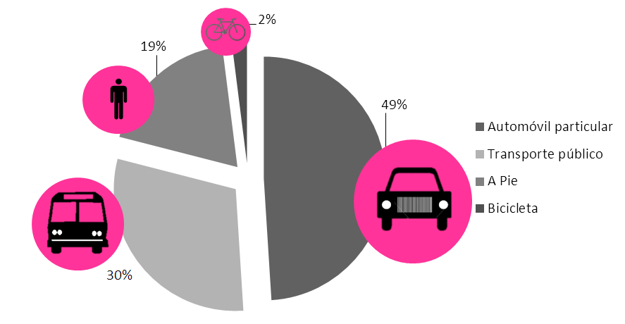

El desarrollo orientado al transporte (DOT), es un modelo urbano que busca concentrar y construir el desarrollo de la vivienda, trabajo y servicios en torno al transporte público; se promueven modos alternos de movilidad que generen el desarrollo de las ciudades de manera sustentable; como caminar, usar la bicicleta y el transporte público.
Dado que el crecimiento de la mancha urbana en la Comarca Lagunera es acelerado, es pertinente considerar este modelo, que promueve una ciudad compacta y de alta densidad a través de la mezcla de usos de suelos, infraestructura peatonal y ciclista de calidad, una movilidad eficiente con vialidades interconectadas, donde las personas puedan elegir un medio de transporte diferente al automóvil.
En la Laguna se observa una disminución en la densidad media urbana, de 87.8 habitantes por hectárea en el año 2000 a 77.1 habitantes por hectárea en el año 2010, con una clara tendencia exponencial. Esto se traduce en una ciudad dispersa en el territorio, un crecimiento desmedido que genera viajes con mayores distancias de traslado, centros urbanos desarticulados y fragmentados que promueven la inequidad social.
Además grandes extensiones de territorio, demandan una mayor cobertura en equipamiento y servicios públicos. Al no poder cubrir tan grandes áreas, estos espacios se ven deficientes, desarticulados y de muy mala calidad para sus usuarios, y no abastecen a toda la población.
Adicional a esto, la falta de una estructura vial eficiente y de calidad que permita otros modos de movilidad ha favorecido el uso del automóvil para desplazarse en la ciudad. Los proyectos de infraestructura privilegian puentes o grandes vialidades, creando grandes externalidades negativas para la ciudad, como el incremento en la contaminación atmosférica, ruido, accidentes que promueven una poca seguridad vial y congestionamientos.
Según datos de INEGI, la Zona Metropolitana de la Laguna cuentan con 260 vehículos registrados por cada mil habitantes, esto quiere decir que existe un automóvil para cada 3.8 laguneros. Aproximadamente la mitad de la población utiliza el auto como medio de transporte, y es una respuesta a la expansión urbana que se presenta en la Zona Metropolitana.
Una posible solución
El Desarrollo Orientado al Transporte no solo trata de la implementación y mejoramiento del transporte público; sino además propone otras técnicas que vayan de acuerdo a los principios del Desarrollo Urbano, como mejoramiento de las política de vivienda. Los usos de suelos mixtos donde la vivienda, el trabajo y el comercio se encuentren a distancias caminables, diversificando el panorama para los transeúntes, promoviendo la convivencia y recreación de la población.
También sugiere modificar la distribución del espacio público, por ejemplo reducir el número de cajones públicos en vialidades que den espacio para la creación de ciclo vías y bici-estacionamientos, entre otras muchas estrategias, así como las áreas dedicadas al estacionamiento, y aprovecharlas para vivienda, negocios, o incluso espacios públicos. Asimismo promover el uso de modos alternativos al auto, transporte público de calidad, integrado y multimodal y redistribuir el presupuesto para la inversión de infraestructura peatonal, ciclista y de transporte público.
Esta situación nos hace replantearnos hacia qué dirección nos dirigimos en cuanto al desarrollo urbano de la ciudad, debemos comenzar a pensar en estrategias que nos lleven a un modelo de desarrollo urbano donde se integren todos los elementos de una movilidad urbana sustentable, eficiente, incluyente y sostenible para la población de la Zona Metropolitana de la Laguna.
Distribución Modal de Viajes en la ZML
